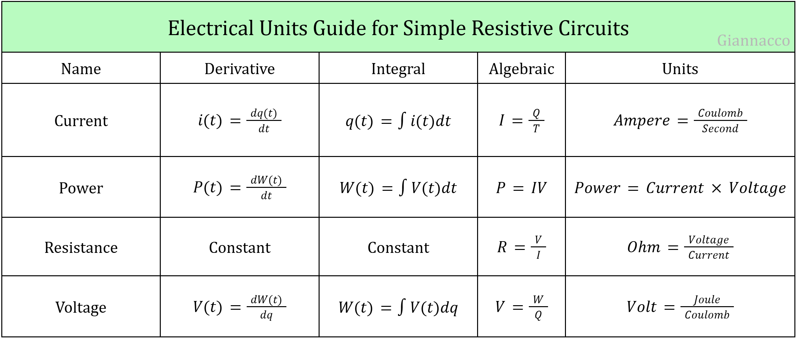

Linear Circuits One
Home
Linear Circuits One
Linear Circuits Two
Digital Systems
Engineering Analysis
CS & IT
Contact Me
Electrical & Computer Education: Peer Resource Sharing
Formula Sheets and Reference Cards:
Open "Electrical Units Guide for Simple Resistive Circuits" as a PDF

Open "Electrical Units Guide for Linear Circuits" as a PDF
Open "SI Prefixes for Electrical Engineering" as a PDF
Open "Passive Sign Convention Guide" as a PDF
Open "Classification of Dependent Sources" as a PDF
Open "Ohm's Law" as a PDF
Open "Open and Short Circuits" as a PDF
Open "Kirchhoff's Laws" as a PDF
Open "Circuit Connection Types" as a PDF
Open "Resistors in Series and Parallel" as a PDF
Open "Voltage and Current Division" as a PDF
Open "Source Transformation" as a PDF
Open "Superposition" as a PDF
Open "Nodal Analysis Procedure" as a PDF
Open "Mesh Analysis Procedure" as a PDF
Open "Supernode Constraint Equation" as a PDF
Open "Supermesh Constraint Equation" as a PDF
Open "Thevenin and Norton Equivalent Circuits" as a PDF
Open "Common Misconceptions and Mistakes For Exam 2" as a PDF
Open "Maximum Power Transfer Theorem" as a PDF
Open "Capacitance and Inductance Formulas" as a PDF
Open "RL/RC Switch Guide" as a PDF
Open "How to Prove Concavity for a Graph" as a PDF
Open "Source and Energy Storage Element Behavior When Turned Off" as a PDF
Open "The Steady-State Expression" as a PDF
Open "Sinusoidal Wave Values" as a PDF
Open "Phase Relation" as a PDF
Open "Root Mean Square Value" as a PDF
Open "Converting Sines to Cosines" as a PDF
Open "Time Domain and Phasor Domain" as a PDF
Open "Converting Rectangular to Polar (Impedance)" as a PDF
Open "Sinusoidal Response of Circuit Elements" as a PDF
Open "Complex Power Formulas" as a PDF
Open "Sinusoidal Steady-State Maximum Power Transfer Theorem" as a PDF
Open "Common Mistakes for the Final Exam" as a PDF